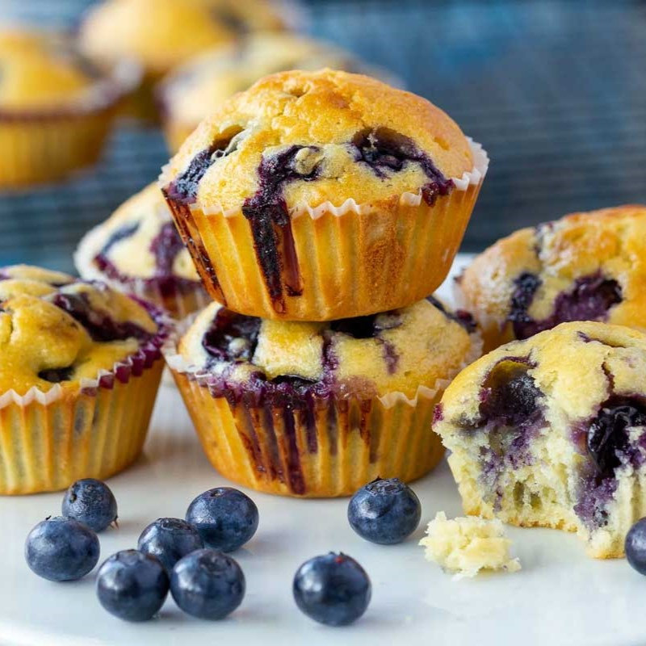

Muffins de arándanos
- 2 tazas de harina integral
- 2 cucharaditas de polvo de hornear
- 1 pizca de sal
- 1/4 cucharadita de bicarbonato de sodio
- 2 huevos
- 3/4 taza de azúcar mascabo o edulcorante a gusto
- 1/4 taza de aceite neutro
- 1 taza de puré de manzanas (moler o rallar, 1 o 2 manzanas, sin cocinar)
- 1 cucharadita de ralladura de limón
- 1 cucharadita de esencia de vainilla
- 3/4 taza de leche descremada
- 1 taza de arándanos
Ingredientes:
- Precalentar el horno a 180°C.
- En un bowl, mezclar todos los ingredientes secos: harinas, polvo de hornear, sal y bicarbonato.
- Luego en otro bol batir los huevos, azúcar (o edulcorante) y aceite por unos 3 minutos.
- Añadir el puré de manzana, ralladura y vainilla.
- A todo esta mezcla ir agregando los ingredientes secos mezclados anteriormente, intercalando con la leche.
- Una vez todo mezclado, agregar los arándanos.
- Colocar la mezcla en moldes de muffin (silicona o papel), hasta 3/4 en cada molde.
- Hornear por 25 minutos.